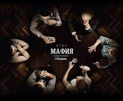

Правила игры в Московскую мафию |
||
МЕНЮИгровые ролиПравила игрыНеобходимое для проведения игрыГлавная страница |
 |
Как вы знаете правила очень похожи на правила игры в Питерскую мафию, но всё же есть различия. Общая характеристика правил - они более строгие, чем питерские. И так. Есть красные - то есть МИРНЫЕ жители, и есть чёрные - то есть МАФИЯ. Перед игрой заранее подготовлены карты, вытаскивая которые ребята получают свою роль. Кол-во ироков. Что ж. Количество игроков ограничено. Максимальное количество - 11 игрков (включая ведущего)(но в больших компаниях зачастую нарушают правила, играют человек по 15 или 14. В целом это не проблма, но безусловно правила игры придётся изменить. Появится больше "чёрных карт" ну и "красных" в том числе. Остальное остаётся попрежнему. Один дон, один шериф. У Дона Мафии/Шериффа есть возможность отискать шериффа/мафию. Для этого отведён специальный момент ночью. Ведущий говорит "Просыпается Дон/Шерифф ищет шериффа/мафию. Потом ведущий показывает спецальный жест (либо да, либо нет). Таким образом игрок узнаёт, правильно ли он угадал шерифа/мафию. Во время игры у каждого из участника есть ровно минута, чтобы высказать своё мнение, и есть своя очередь. После того, как его очередь прошла игрок НЕ ИМЕЕТ право высказываться, если он нарушил правила получает ФОЛ. В этом то и заключается сложность. Нельзя высказать изменённое мнение. Поэтому то нужно играть максимально аккуратно и думать прежде чем говорить, ведь каждое высказанное тобой мнение может быть использовано против тебя. |